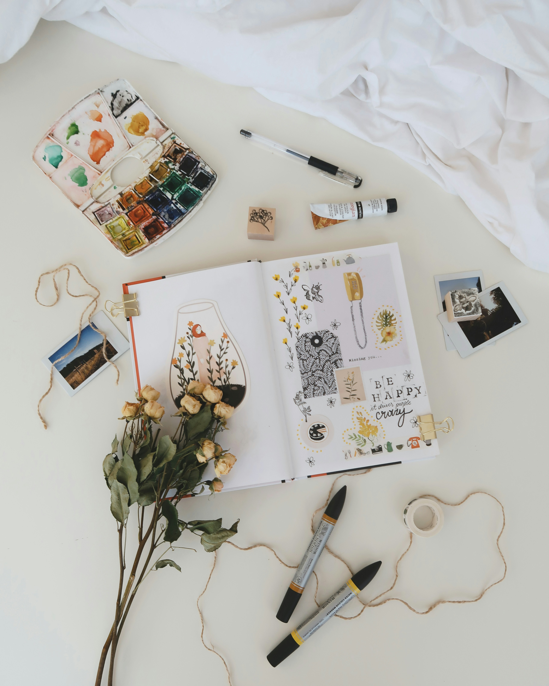

MY ARTWORK GALLERY
Welcome to my artwork gallery here you can explore about some artworks.
SEVERAL ART TYPES
- PAINTING
- DIGITAL ART
- PHOTOGRAPHY
- DIY CREATION
- CRAFT
PAINTING

Painting artwork is a creative expression where artists use colors, textures, and techniques to bring ideas, emotions, and stories to life on a surface such as canvas, paper, or walls. It is one of the oldest and most powerful forms of visual art, allowing individuals to capture the beauty of nature, portray human experiences, or explore abstract concepts. Through the use of brushes, paints, and imagination, painting transforms simple materials into meaningful works that can inspire, communicate, and evoke deep feelings in those who view them.
DIGITAL ART

Digital artwork is a form of creative expression made using digital tools such as computers, tablets, and software instead of traditional materials like paint or canvas. It combines technology with imagination, allowing artists to design, draw, paint, and manipulate visuals with precision and flexibility. Digital art can range from illustrations and animations to 3D models and graphic designs, making it widely used in fields like entertainment, advertising, gaming, and media. This modern art form offers endless possibilities for creativity, enabling artists to experiment with styles, colors, and effects while easily sharing their work with a global audience online.
PHOTOGRAPHY

Photography is the art and technique of capturing moments, scenes, and emotions through the use of a camera. It allows us to preserve memories, document events, and tell stories without words by freezing a moment in time. Through the careful use of lighting, composition, angles, and perspective, photographers can transform ordinary subjects into powerful visual messages. Photography is not only a creative form of self-expression but also an important tool in communication, journalism, science, and art, enabling people to see the world from different viewpoints and appreciate its beauty in new ways.
DIY-CREATION

DIY creation (Do It Yourself) is the practice of designing, building, or crafting things on your own rather than buying them ready-made or hiring someone else to do it. It encourages creativity, innovation, and problem-solving as individuals use easily available materials and tools to make something useful, decorative, or personalized. DIY projects can range from home décor and handmade gifts to clothing, furniture, and art pieces. This approach not only saves money but also gives a sense of accomplishment and uniqueness, allowing people to express their personality and imagination through their creations.
CRAFT
Craft is the art of creating decorative or functional items by hand, using various materials such as paper, fabric, wood, clay, or metal. It involves skill, creativity, and patience, as each piece is carefully designed and shaped with attention to detail. Crafts can include activities like knitting, pottery, origami, jewelry making, or embroidery, and they often reflect cultural traditions, personal expression, and artistic imagination. Beyond being a creative hobby, crafting allows people to develop new skills, recycle materials, and produce unique handmade items that hold sentimental or artistic value.
ARTWORK COMPARISON TABLE
| artwork | year of origin | medium |
|---|---|---|
| painting | ancient time | paint(oil paint) |
| digital art | late 20th century | digital tools |
| photography | 19th century | light captured on film |
| craft | ancient time | handmade material |